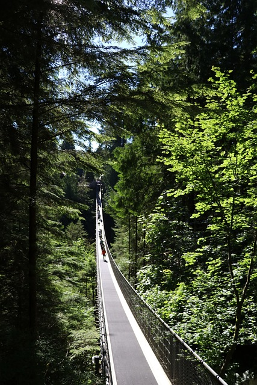
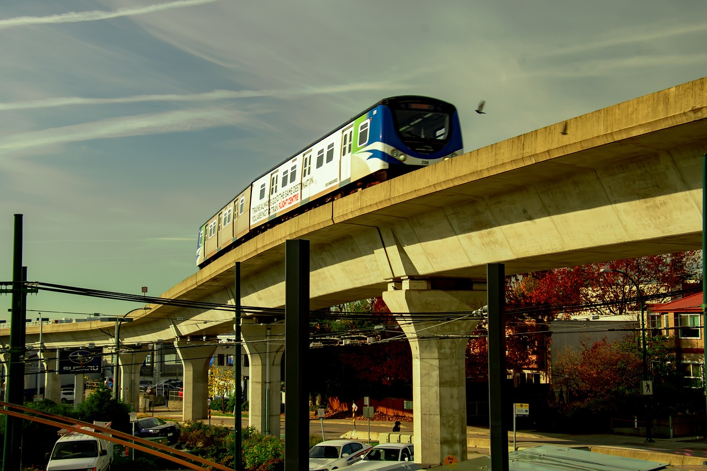

Aerial image of downtown Vancouver, from AsecentXmedia. Shot on February 07, 2018 Source Istockphoto.com
Source:Vancouver.com
Aerial image of downtown Vancouver, from AsecentXmedia. Shot on February 07, 2018 Source Istockphoto.com
Source:Vancouver.com
Vancouver is one of my favorite cities in the World. It has lots to do, and has some of the best public transit in all over North America. Plus the people here are quite friendly as well.
In this article, I will talk the top 4 attractions that one must check out, regardless of how long you are staying.
I will also talk about how to reach these places
The attractions I will mention here, are
Vancouver became a city in 1886.
Stanely Park, is actually 10 times bigger than Central Park.
The city is also considered the 5th most livable city in the world.
If coming to Vancouver, I recommend staying in hotels or Airbnbs that are close to public transi.t
Driving in Vancouver can be quite difficult, and there's usually always traffic in that city, so I do recommend try to use public transit(especially the skytrain) as much as you can as it can be way more convienent. Plus the public transit system is quite reliable.
Stanely Park is arguably the biggest and most popular park in all of the Vancouver Metropolitan area.
And for good reason. The park has lots of attractions and trails that take you some of the best viewpoints and such.
Keep in mind, there's no skytrain station that goes through the park, so you either have to take a bus or bike there.
If you are staying close to the waterfront of Vancouver, I would, recommend biking to the park. The waterfront has a bike trail that goes to the park. And it's quite safe to ride on in my experience.
And as mentioned above, there's also a lot of biking trails in the park and it's very well signed<./p>
Aerial image of downtown Vancouver, from AsecentXmedia. Shot on February 07, 2018 Source Istockphoto.com
Source:Vancouver.com
Granville island is also a popular attraction in the Vancouver area. The island is full of small shops and such. It's a wonderful experience to visit the island.
There's even this big building where vendors are selling fruit, souvineers, and even maple syrup, real Canadian Maple Syrup.
To get to the island, it is recommended not to bring a car as parking is limited.
I instead recommend taking the skytrain and aquabus to the park. The aquabus is a boat that takes you to Granville Island from different places.
If you are near the "Canada Line" I recommend taking that train to Roundhouse station and walking towards the dock which will have signs directing you to the Aquabus.
But if you are near the "Expo Line" of the skytrain system, I recommend taking the train to Main street/science world station, and take the aquabus from there.
 Vancouver Canada Downtown Granville Island Public Market stock photo, from Benedek, shot on October 28, 2021 Source: Istockphoto.com
Vancouver Canada Downtown Granville Island Public Market stock photo, from Benedek, shot on October 28, 2021 Source: Istockphoto.com
This park is also one of the most popular attractions.
The park basically has one long suspension bridge that you can walk on and get some amazing photos.
Keep in mind, there is no sky train station connecting to the park.
To get to this park, you can drive here, but if you are taking public transit, I recommend going to the Waterfront station, and taking the waterbus to North Vancouver, and there should be a bus that takes you the park.
 Bridge, Capilano, North Vancouver Image, taken on August 12, 2022 Source: Pixabay.comThe Skytrain is techincally a metro used for public transit purposes, but I do recommend taking it when you get the chance.
The unique thing about this, is that entire skytrain network is selfdriving. All the trains run by themselves.
Plus the trains are quite clean and the system can take to many places in the Vancouver area.
Also, you can get some fantastic views of the city when on a skytrain
There are three lines in the system, the Expo Line, The Canada Line, and Millimenim Line.
 Light rail Transit, MRT, Skytrain Image, taken by Dayamay, taken on November 1, 2019 Source: Pixabay